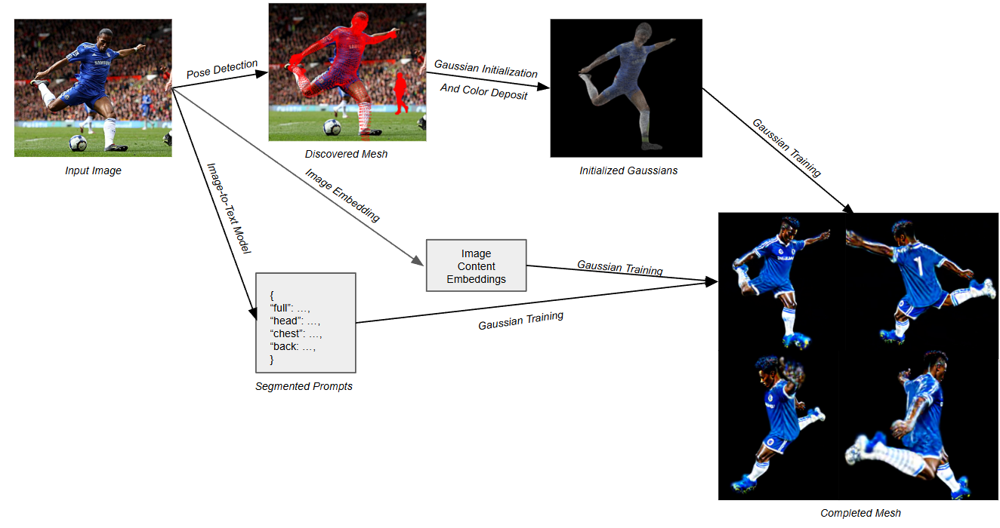
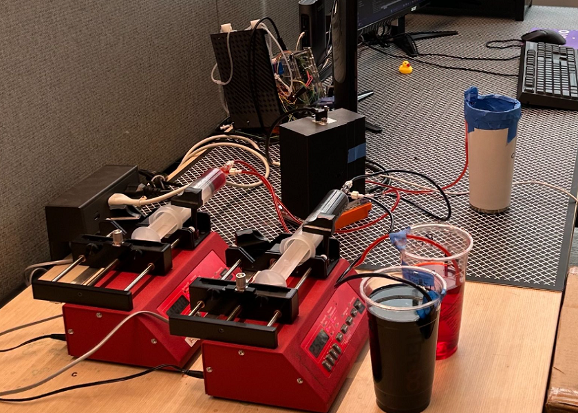
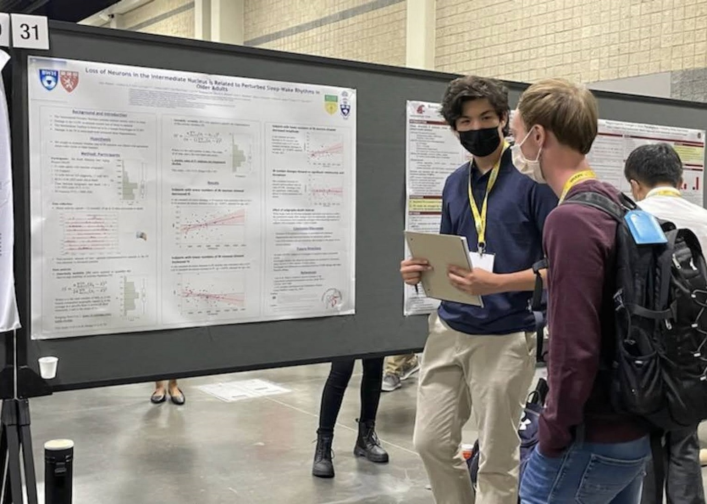
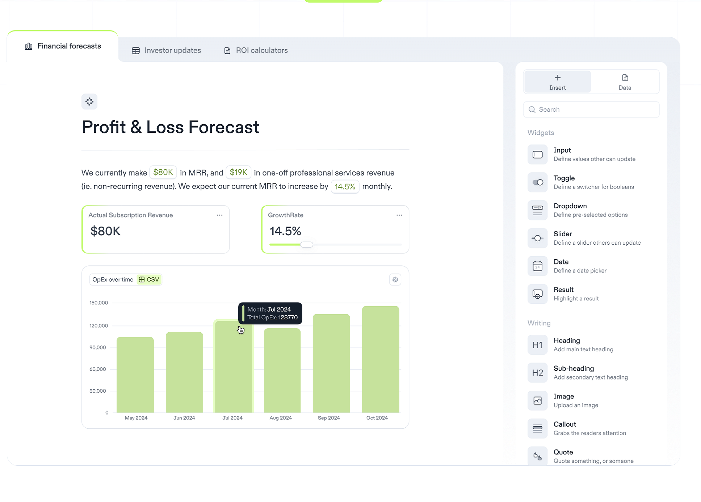
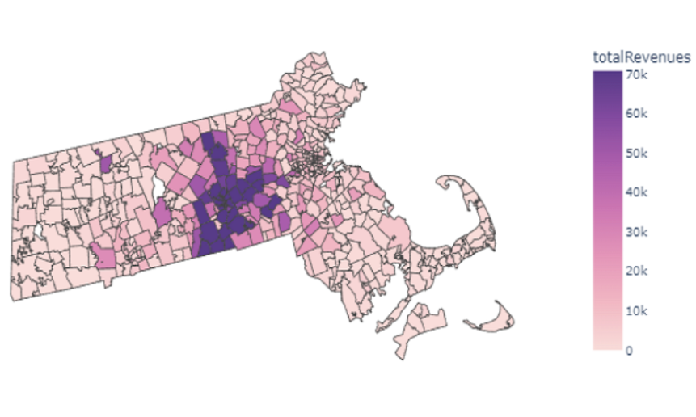
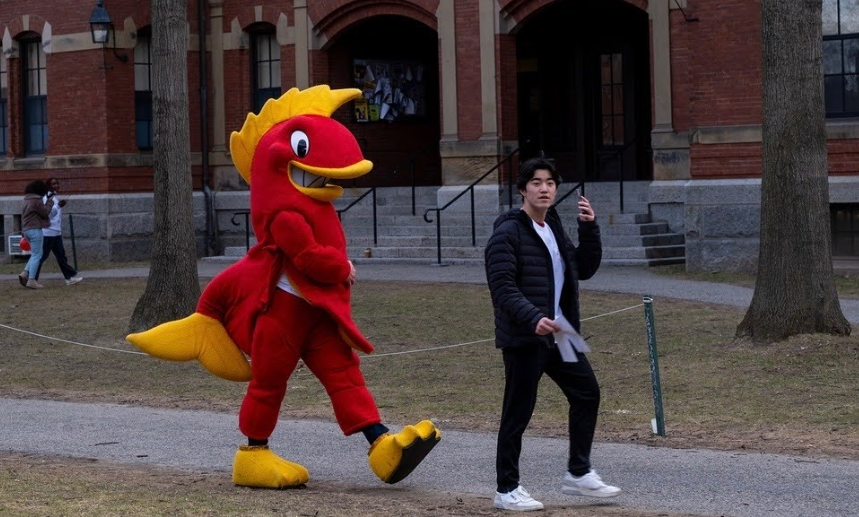

I've gained a number of technical skills through the years working with computers and code, and I hope they will be valuable in whatever path I choose in the future. I'm always working on improving the skills I've already learned, and pursuing new ones that will help me create in the future.
At Harvard, I am pursuing a concurrent masters in Applied Math, with an application in computer science. I'm also involved in my house community and club hockey.
At Belmont Hill, I got an engaging and personal high school education. I also built interpersonal and teamwork skills in the community-oriented environment.
In my pre-K-8th at Shady Hill, I got a strong foundational education, developed a lasting passion for learning, and began my exploration of coding and math.